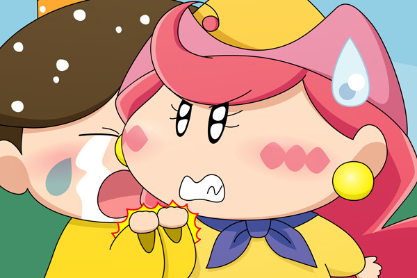

ミレン「聞きましたよ～。
アクミちゃん、ボクに内緒でドイツに行っちゃうんでしょ…」
アクミ「げっ、ミレン！？」
ミレン「恋人のボクに一言も相談しないなんてひどいよ～～～っ、
残されたボクはどうすればいいのかわからないよ～～」
アクミ「だれが恋人だっ！
だいたいお前がどうなろうとアタイには関係ないんだよ」
ミレン「じゃあアクミちゃん、今日からボクと恋人として
１からやり直そうよ」
アクミ「アタイはドイツで１からやり直すって決めたんだから、
ミレンとの関係は今日限りでお・し・ま・い！！」
ミレン「そんなぁ～～～っ」
ごおるでん終盤にて、ダアクを倒したことでアクミは元の姿に戻りましたが、ミレンとの関係は元通り(?)にはならなかったようです。
このシーンはアニメにはないオリジナルです。ミルモや楓ですら知らなかったアクミのドイツ行きの話をミレンは何故か知っていますが、アクミに会いに行った時に沙織（もしくはネズミ）との立ち話を盗み聞きしてしまった設定で…。
第４回目のお題は「腕を掴んで引き止める」。
何だかお題の主旨を取り違えている感もありますが、引き留めると行ったらミレンだろうなぁと考えてこの二人を描きました。
アクミは何だかんだでミレンには弱いんですよね。妖精付き合いの苦手なアクミだけど、どこまでも絡んでくるミレンには少し気を許している部分もあったはず…。でも２年目でミルモやリルム、そしてラットと出会ってからは、今までのアクミではなくなってしまったかもしれませんね。
次回のお題は「上着を貸す」です。
(2012/8/19)